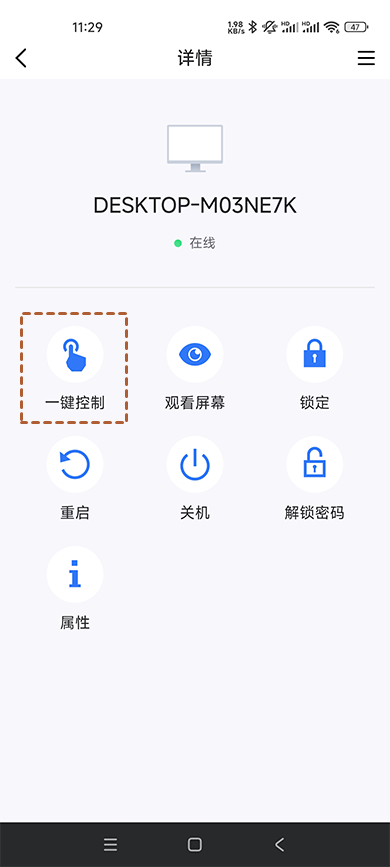
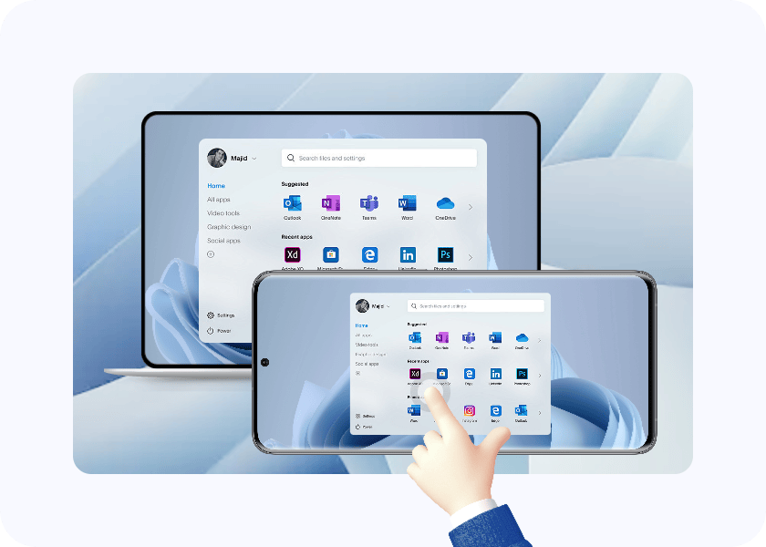

AnyViewer 一键控制凭什么能免密直连？拆解它的身份认证与权限模型
同样是远程控制，为什么 AnyViewer 能让同账号设备一键直达、零验证跳过？我从它的设计原理、权限分层和实际代价三个层面，把这套身份认证机制拆给你看。
第一次在手机上点开 AnyViewer官网 下载的客户端里那个「一键控制」按钮时，我脑子里冒出来的第一个问题不是「好用不好用」，而是「它凭什么敢这么干」。

远控软件这个品类，安全是刻在骨子里的焦虑——TeamViewer 默认给你八位数临时密码，ToDesk 每开一次会话刷新一次安全码，就连 Windows 自带的远程桌面也要你确认弹出框。大家都在拼命给连接加门槛，AnyViewer 倒好，登录同一个账号就能免验证直连，数秒直达桌面。它不怕吗？还是说，它根本就没在同一个维度上想这件事？
问题的本质：远控安全到底在防什么
先把事理清楚。远程控制的安全威胁，说到底就两类：陌生设备的恶意尝试和已授权设备的滥用。
传统远控的思路是「每一次连接都当作陌生人」——不管你是谁、之前连没连过，每次都得掏一次临时密码。这相当于门卫对每次来访都查身份证，效率低但绝对保守。
AnyViewer 换了个思路：同账号设备 = 可信设备。只要两端登录了同一个账号，设备就进入了「我的设备」列表，列表里的东西就是自己人。这不是偷懒，而是它在安全模型上做了一个明确的取舍——把验证的时间点从「每次连接」提前到了「设备首次登录账号」那一刻。
拆解：三层防线怎么分工
这套模型能跑通，靠的是三层防线的配合，而不是单靠「账号登录」这一件事。
第一层：账号身份 = 根凭证
账号登录是最上层的身份确认。你用手机 App 登录、用电脑端客户端登录，本质上都是向 AnyViewer 的服务器声明「我是这个账号的主人」。服务器验证完之后，把这台设备注册进该账号的设备清单里。
这个注册动作本身是有成本的——免费档限制一个账号最多 3 台登录设备，不是小气，而是在用配额倒逼用户思考「哪些设备才是真的自家人」——安装包直接从anyview下载拿就能用，免费档覆盖了大多数日常需求。设备数越多，可信圈越大，风险面也跟着扩展。把上限卡死，相当于帮你做了第一道风险收敛。
第二层：设备在线状态 = 连接前提
一键控制不是点了就一定能进，它有个隐含前提：被控端的客户端必须在运行、设备处于唤醒状态、网络可达。
这个前提很容易被忽略，但它其实是天然的第二道闸门。电脑休眠了？客户端没开？那手机端「我的设备」列表里显示的就是灰点，一键按钮是暗的，根本点不动。这意味着即使账号被盗，黑客拿到你的手机，也只能连那些此刻真的在运行的设备——而一台运行中的电脑，大概率你本人也在附近，或者至少处于你能感知到状态的场景里。

第三层：黑白名单 = 精细隔离
如果说前两层是通用安全网，黑白名单就是给「无人值守但又必须开放」的场景量身定做的。
去anyview文档翻一下就会发现：白名单按账号或设备 ID 放行，黑名单精确拒绝。这和一键控制看起来矛盾——既然同账号已经免验证了，还要名单干什么？其实不矛盾。一键控制解决的是「我自己的设备怎么快速连」，黑白名单解决的是「这台电脑除了我，还有谁能连」。
举个场景：公司里一台服务器需要运维同事偶尔远程处理，你不想给对方账号（因为账号还关联着你家里的三台设备），也不想每次都生成临时密码。这时候白名单按设备 ID 加一条，那台运维机就被放行，其他任何设备——包括你账号里的第四台手机——都连不上。
这种双层隔离的设计是 AnyViewer 和很多竞品拉开差距的地方：大多数远控要么全靠账号、要么全靠临时密码，它把两种机制拆成了不同层级的工具，让用户自己组合。
取舍：这套模型的代价是什么
没有免费的午餐。AnyViewer 这套「账号即凭证、列表即可信、名单即隔离」的模型，在三个场景里会露出短板。
场景一：频繁连接陌生设备
一键控制只对「我的设备」里的东西生效。要连别人的电脑——比如帮朋友远程修个电脑——你还是得走安全码连接或者交互请求。这时候 AnyViewer 的体验和 ToDesk、TeamViewer 没本质区别，甚至因为免费档的设备数限制，你可能还得先移除几台旧设备腾位置。
这是它最明显的边界：它优化的是「自己连自己」的路径，不是「连陌生人」的路径。
场景二：账号安全失守
如果你的 AnyViewer 账号本身被盗了，那一键控制反而是最危险的通道——黑客登录账号就能直接点进你的所有在线设备，不用任何额外验证。这时候黑白名单也救不了你，因为黑客用的就是你账号下的设备。
所以它的安全模型有一个隐含假设：账号本身的安全性足够高。开启二次验证、不在陌生设备上登出自己的 AnyViewer 账号，这些基础习惯在 AnyViewer 里的权重，比在其他远控里要大得多。
场景三：多显示器场景的边界问题
多显示器的同窗全览模式，本质上是把所有屏幕画面缩放进同一个窗口。这对巡检很有用——扫一眼就能看两块屏有没有弹窗——但对精细操作就不够了。你得先全览定位，再切单屏放大操作。付费档虽然支持多屏独立窗口，但那又是另一层成本。
这种「先粗后细」的设计思路，贯穿了 AnyViewer 的很多功能：一键控制（粗粒度直达）→ 多屏切换（按需细化）→ 画质调节（最后微调手感）。它把复杂度留给了用户按需解锁，而不是一开始就塞给你一堆选项。
判断：它适合谁，又不适合谁
绕了一圈回到开头的问题——AnyViewer 凭什么敢让同账号设备免密直连？因为它把安全的重心从「每次连接验证」转移到了「可信圈的边界管理」上。账号登录、设备数配额、黑白名单、在线状态检查，这四层组成了一个金字塔式的信任模型，顶端是你自己（账号），底端是具体的连接行为。
这套模型对两类用户特别友好：
多设备常驻场景——家里一台媒体中心、办公室一台工作站、手机随时回连。这三类设备固定在你的账号下，一键控制的效率优势是碾压级的。
无人值守的固定管理——服务器、远程工位、挂着下载的电脑。白名单把访问权限精确锁死，临时密码反而成了多余的变量。
但如果你是那种经常帮朋友修电脑、给客户做技术支持的人，AnyViewer 可能不是最优选择——它的免费档设备数太少、连接陌生人的路径和竞品没差，反而因为账号绑定的设计多了一层思考负担。
说到底，远控软件的安全设计从来不是「越严越好」，而是「门槛放在哪里最划算」。AnyViewer 选择把门槛放在信任圈的入口——你想进圈，先登录账号；进了圈，内部就是绿色通道。这个选择不完美，但对「自己连自己」这个高频刚需场景来说，它刚好踩在了效率和风险的平衡点上。关于 AnyViewer 的资料整理，我手头有一份 GitHub 仓库，国内网络环境下可以直接走 Gitee，还有一份同步放在 GitCode 上以防不时之需。